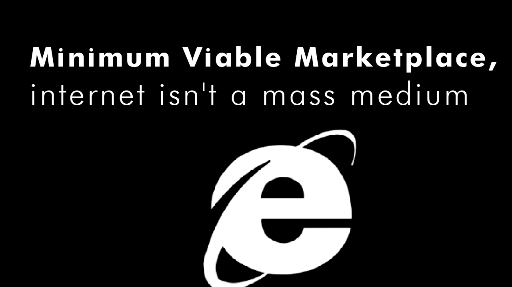

Jun 27, 2020
Minimum Viable marketplace, the internet isn’t a mass medium

Again it is a strong misconception to take the internet as a mass medium instead of an aggregation of small tiny mediums. The success story that we see as mass solutions whether they are about social media like Facebook or LinkedIn or marketplaces like Upwork or amazon are in fact also aggregates of several verticals. Facebook started from the student vertical before reaching the worldwide web by taking verticals one by one like families, hobbyist .. Amazon started as a book store before expanding to more segments like electronics, …. This show you that before thinking about the big aggregators you will start thinking about this minimum viable audience you can reach and serve easily and start with it. When it comes to marketplaces, I call it the Minimum Viable Marketplace MVP. It is the smallest marketplace you can build and manage. This marketplace will help you know all your participants' needs. What features of your marketplaces will get each side of your marketplace excited and what parameters will you screen to make your marketplace a better place for making transactions. Stop seeing the internet like this big and infinite ocean and think about this island that you can take and lead. That’s what you need to know as a marketplace builder, developer or manager. Think BiG for sure but take the time to get a microscope and see how things work at a small scale will help you cut the noise. The way we see the internet is what makes it a noisy place. We should cut this noise out. If you want to know more you can read this